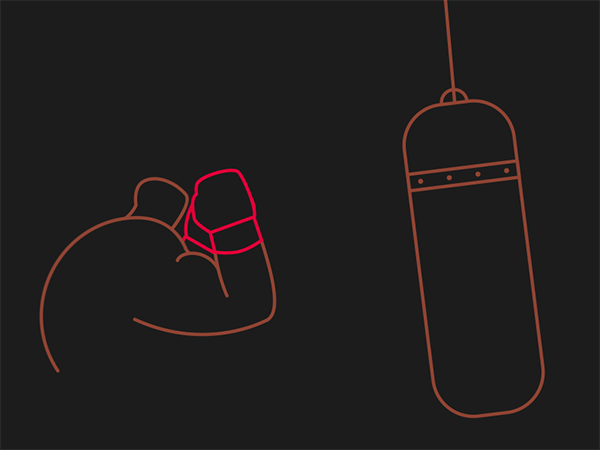

I feel so low this week. There are so many things I want to change about myself and my habits, so many things I could change if I’d I could just motivate or discipline myself. I know you shouldn’t wait for motivation to do something, but it’s just as difficult to properly maintain discipline. Sometimes I think ”to hell with it, I’ll be like this forever” and then I remember I might live for another 40-50 years and I cant stand being like this always. Also I might live for much less if I keep on going not eating healthy or taking proper exercise.
I feel like Im doing bad in many aspect of my life. Probably the only things Im good at is finances and academics, and I’ll likely jinx those too. I just really wish my mind was a robot I could program into doing exactly what was needed. But if I took out my mind and was programming it, who was that ‘I’ that wasn’t my mind that was doing the programming?
I don’t think I make any sense. I’m just tired of me, and I’m annoyed that you only get one shot at earthly life and I’ve got stuck being me for all time. If I was someone with a bit more grit and passion… ah well. Rewarding myself doesn't work. I'll have to try another way.
There is a saying of our Prophet that goes something like “do not lose heart, and if anything (in the form of trouble) comes to you, don't say: If I had not done that, it would not have happened so and so”. I really like this advice because it keeps you from dwelling on your past mistakes and tells you to do what you can right now, but lately I’ve just found it difficult not to give up on me.
PS: Im not depressed or suicidal, just discontented.